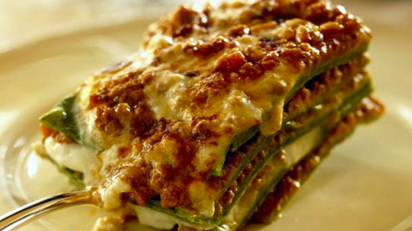

Lasagne Verdi al Forno

Description
A recipe from my home in Emilia-Romgna, Italy. this lasagne verde made with spinach pasta cannot be beaten. It's excellent if you want to impress some guests - or even yourself. It may be a bit time-consuming, but it's well worth the TLC you put into it.
Ingredients
Pasta:
- 5 ounces spinach-rinsed, stemmed, and dried
- ⅝ cup semolina flour
- 2 large eggs
- 1 teaspoon salt
- 1 ½ cups all-purpose flour
Ragu:
- 2 tablespoons butter
- 1 carrot, diced
- 1 stalk celery, diced
- 1 onion, diced
- 2 slices bacon, diced
- 3 ½ ounces lean ground pork
- 3 ½ ounces lean ground beef
- 1 cup beef stock
- 2 tablespoons tomato paste
- 1 teaspoon dried oregano
- salt and pepper to taste
- 3 ½ ounces chicken livers, trimmed and chopped
Cheese:
- 1 pint ricotta cheese
- 1 ⅔ cups grated Parmesan cheese
- 3 tablespoons butter
Steps:
-
Make pasta: Place a steamer insert into a saucepan and fill with water to just below the bottom of the steamer. Bring water to a boil. Add spinach, cover, and steam until bright green, about 2 minutes. Squeeze spinach to remove excess moisture and process in a food processor to make a paste. Add semolina, eggs, and salt; process until smooth. Transfer mixture to a large bowl and stir in enough flour to make a smooth dough. Knead briefly, then cover with a dish towel and set aside.
-
Make ragu: In a large skillet, melt butter over medium-high heat. Cook and stir carrot, celery, onion, and bacon in hot butter until onion is translucent. Stir in pork, beef, and ham; cook and stir until crumbly and browned. Stir in beef stock, tomato paste, and oregano. Season with salt and pepper. Reduce heat to low, cover, and simmer for 20 minutes.
-
While ragu is simmering, make béchamel: Combine butter and flour in a medium saucepan over medium-low heat. Whisk to make a roux. Remove from heat, let rest for 1 minute, then whisk in warm milk. Return to heat and simmer for 10 minutes, stirring constantly, until thickened. Season with salt and nutmeg. Remove from heat.
-
Cook pasta: Prepare an ice bath. Bring a large pot of lightly salted water to a boil. On a floured surface, divide pasta dough into 3 portions. Roll each portion out to a thin sheet. Cook each pasta sheet in boiling water for 3 minutes; remove and dip in ice water; drain and dry on a clean cloth.
-
Finish ragu: Stir chicken livers into simmering sauce. Cook for 1 minute, remove from heat, and set aside.
-
Preheat the oven to 400 degrees F (200 degrees C). Grease a 9x13-inch baking dish.
-
Assemble lasagna: Place 1 pasta sheet in the bottom of the prepared baking dish. Spread 1/3 of the ragu, 1/4 of the béchamel, 1/3 of the ricotta, and 1/4 of the Parmesan over pasta. Repeat layers twice. Top with remaining béchamel and Parmesan; dot with butter.
-
Bake in the preheated oven until the top is golden brown, about 30 minutes.